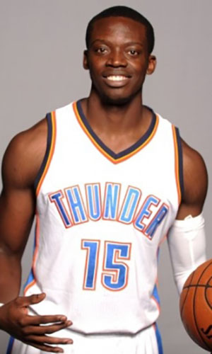

|  |
Матчи |
77 |
|
Передачи (всего/среднее) |
460 |
6 |
| В основе |
|
|
Подборы в защите (всего/среднее) |
271 |
3.5 |
| Время (всего/среднее) |
2268:15 |
29:27 |
Подборы в атаке (всего/среднее) |
56 |
0.7 |
| Очки (всего/среднее) |
1117 |
14.5 |
Подборы (всего/среднее) |
327 |
3.2 |
| 2-очковые броски (всего/среднее) |
360/755 |
4.7/9.8 |
Перехваты (всего/среднее) |
62 |
0.8 |
| 2-очковые броски (% реализации) |
47.7% |
|
Потери (всего/среднее) |
168 |
2.4 |
| 3-очковые броски (всего/среднее) |
72/241 |
0.9/3.1 |
Блокшоты (всего/среднее) |
9 |
0.1 |
| 3-очковые броски (% реализации) |
29.9% |
|
Блокшоты соперника (всего/среднее) |
69 |
0.9 |
| Штрафные броски (всего/среднее) |
181/218 |
2.4/2.8 |
Фолы (всего/среднее) |
167 |
2.2 |
| Реджи Джексон |
Штрафные броски (% реализации) |
83% |
|
Коэффициент полезности (всего/среднее) |
952 |
12.4 |